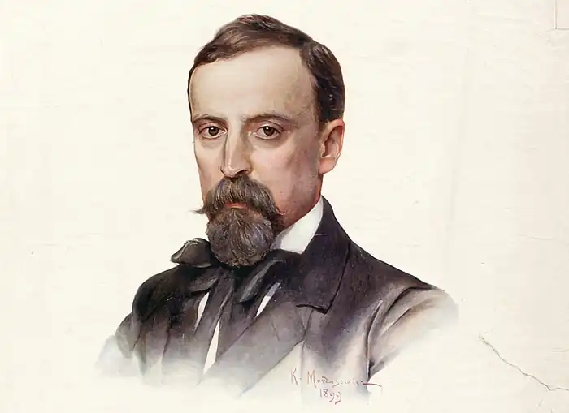
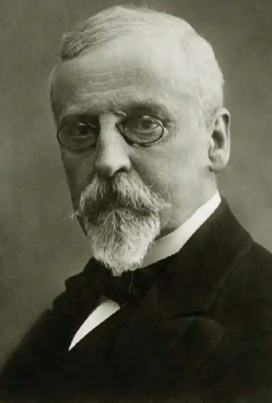

ГЕНРІК СЕНКЕВИЧ
(1986-1916)
Польський письменник Генрік Сенкевич походив із збіднілої шляхетської родини. Навчався у 1866-70 роках на медичному та історико-філологічному факультетах у Головній школі (з 1869 — Варшавський університет). З ім'ям Генріка Сенкевича пов'язані досягнення польського історичного роману, а також роману психологічного та новели. Літературну діяльність він розпочав вже у студентські роки. Світоглядні пріоритети раннього Сенкевича формувалися під впливом так званого варшавського позитивізму — ліберальної течії, пов'язаної з процесами капіталізації Польщі у другій половині XIX століття, а також з наслідками поразки польського повстання 1863 року. Перша повість молодого письменника "Даремно" (1872) відбивала настрої, поширені в колах молодої польської інтелігенції після повстання 1863 року. Ліберально-позитивістські тенденції ранньої творчості Сенкевича позначилися, зокрема, в оповіданнях "Гуморески з портфеля Воршілли" (1872), в яких критика аристократії поєднується з ідеалізацією ділків. Проте вже в ранніх оповіданнях, що принесли молодому автору популярність ("Старий слуга" 1875, "Ганя" 1876), відчувається ностальгія за шляхетсько-лицарськими часами. У 1876-1879 роках Сенкевич мандрував містами Європи (Англія, Франція, Італія) та США. Ця мандрівка суттєво вплинула на письменника, сприявши формуванню світоглядної ідейно-ціннісної парадигми його творчості. Скептичне ставлення до цивілізації, заснованої на владі грошей, антипрогресистський песимізм Сенкевича поєднується із звеличенням польського патріотизму як вищої цінності. Так, у своїх "Листах з мандрів" (1876-1878) Сенкевич в цілому схвально ставиться до діловитості й духу підприємницької ініціативи американців, проте, водночас за зовнішньою стороною американського процвітання він зумів розгледіти соціальні протиріччя, злидні та страждання трудящих, засудити з позиції справжнього письменника-гуманіста знищення американськими колонізаторами автентичного індіанського населення. Американські враження знайшли відбиття в його оповіданнях "Орсо", "Сахем", "За хлібом". Особливе місце в художній спадщині Сенкевича належить селянській темі, у розкритті якої реалістичне змалювання вбогості й відсталості польського села поєднується з обуренням свавіллям польських чиновників та поміщиків і щирим співчуттям знедоленим селянам. Так у своїх "Ескізах вугіллям" письменник дає гротескно-саркастичну характеристику польських чиновників і поміщиків і водночас розкриває трагедію занапащеної ними селянської родини. Високим гуманізмом проникнуті оповідання про загибель селянських дітей-сиріт "Янко-музикант" (1879) і "Ангел" (1880). Протестом проти насильницького знімечення поляків сповнені оповідання "З щоденника познанського вчителя" (1879) та повість "Бартек-переможець" (1882). У 80-ті роки Сенкевич звертається до історичної тематики. Інтерес письменника до минулого батьківщини не був випадковим. Посилення русифікації в Королівстві Польському в ці роки, національне гноблення поляків спонукали Сенкевича звернутися до героїчних сторінок історії польського народу, надихнути співвітчизників на продовження боротьби за національне визволення. Проте головною рушійною силою національної історії письменник вважав шляхту, відводячи народним масам другорядну роль. Це суттєво обмежувало його розуміння подій минулого та бачення історичної перспективи. Вельми показовим в цьому відношенні є роман "Вогнем і мечем" (1883), який став першою частиною історичної трилогії, до якої пізніше увійшли романи "Потоп" (1886) та "Пан Володиєвський" (1888). У цьому творі чітко виявляється тенденційна позиція автора щодо національно-визвольної війни українського народу, очолюваної Богданом Хмельницьким. Всі симпатії Сенкевича на боці польської шляхти, лицарські чесноти якої в романі вкрай перебільшуються та ідеалізуються. Передові представники національної польської культури, зокрема Болеслав Прус, піддали роман "Вогнем і мечем" гострій критиці за відсутність в ньому історичної правди та за ідеалізацію шляхти. Більший історичний реалізм притаманний роману "Потоп", в якому йдеться про боротьбу польського народу проти шведської навали у середині XVII століття. У романі "Потоп" дістають літературно-художнього осмислення глибинні причини подальшого занепаду польської держави — феодальна анархія, зрадницька політика магнатів, свавілля та егоїзм шляхти. Проте в цьому романі, як і в першій частині трилогії, виявилась обмеженість і суперечливість поглядів Сенкевича щодо історії Польщі. Високий художній рівень твору, майстерно написані захоплюючі пригоди, яскраві образи трилогії, зокрема роману "Потоп", сприяли успіху письменника. Образи героїв романів трилогії збагатили польську літературу. Попри схильність до ідеалізації шляхти, Сенкевич зміг відбити в персонажах своїх творів як позитивні, так і негативні риси шляхтичів. Прикладом високого патріотизму й лицарської доблесті є головний герой роману "Потоп" Анджей Кмітіц, антиподом якого виступає старий шляхтич Заглоба — базіка, хвалько, п'яниця, боягуз і брехун — більш типовий представник польської шляхти XVII століття. Попри літературно-художні достоїнства трилогії, романи, що її складають, характеризуються сюжетно-композиційною подвійністю. В основі сюжету кожного з трьох романів колізії долі вигаданої пари закоханих на тлі воєнних подій та діяльності історичних осіб. Розміщення персонажів у всіх трьох романах одноманітне: виводиться образ суперника, який, для надання більшої гостроти сюжету, належить до ворожого табору, всі герої, як правило, поділяються на позитивних та негативних, і лише деякі з них даються в розвитку. Розглянута вище трилогія є епопеєю, що поєднує тенденції билинного жанру та історичного роману вальтерскотівського типу,— головний літературно-художній здобуток Сенкевича. Вона характеризується ідеалізацією польського лицарства, не позбавлена рис націоналізму (особливо в романі "Вогнем і мечем"). Особливість цієї трилогії — зображення (вельми тенденційне) польських лицарів, що зумовило численні порушення історичної правди на догоду ідеологічним переконанням автора. У психологічному романі "Без догмату" (1869-1890), якого також було створено з метою протидії занепаду національної самосвідомості поляків, Сенкевич дає реалістичний аналіз духовної деградації сучасної йому молодої людини під впливом зростаючого скептицизму та декадентських настроїв. Роман "Без догмату" написано у формі щоденника молодого польського аристократа Леона Плошовського. Людина освічена, розумна, наділена тонким смаком, Плошовський нічим не займається, ні у що не вірить. Його життя позбавлене мети та будь-яких прагнень. Йому притаманне, як і багатьом іншим освіченим молодим людям декадентської доби, відсторонене споглядацько-медитативне ставлення до дійсності, схильність до постійного самоаналізу, роздвоєність, скептицизм. Ці риси були також притаманні так званим зайвим людям в російській літературі. Плошовському в романі протиставляється його тітка, яка твердо дотримується настанов шляхетської моралі. За задумом Сенкевича, самогубство Леона Плошовського мало затвердити ідейну перемогу догматів католицизму та аристократично-шляхетського суспільства. Проте ціннісні настанови, що їх затверджував Сенкевич, виявились недостатньо переконливими ані для герою роману, який пішов з життя, ані для читача роману. Інший роман Сенкевича, що присвячується автором сучасності,— це "Родина Поланецьких" (1894). Цей роман значно поступався попередньому як в ідейному, так і в художньому відношенні. Письменник створив ідеалізований образ збанкрутілого шляхтича Станіслава Поланецького, який вдається до підприємницької діяльності, спекулюючи хлібом під час голоду. Збагатившись на цих спекуляціях, Поланецький одружується з нудотно-ідеальною Мариною Правицькою, викуповує її маєток і, осівши у селі, займається господарством і старанно молиться Богові. ОСНОВНІ ТВОРИ: "Листи з мандрів", "Вогнем і мечем", "Потоп", "Пан Володиєвський", "Без догмату". ЛІТЕРАТУРА: 1. Горский И. К. Исторический роман Сенкевича.— М., 1966.; 2. Фемилиди А. М. Г. Сенкевич. Его литературная эпоха, жизнь, труды и мысли.— СПб., 1972.